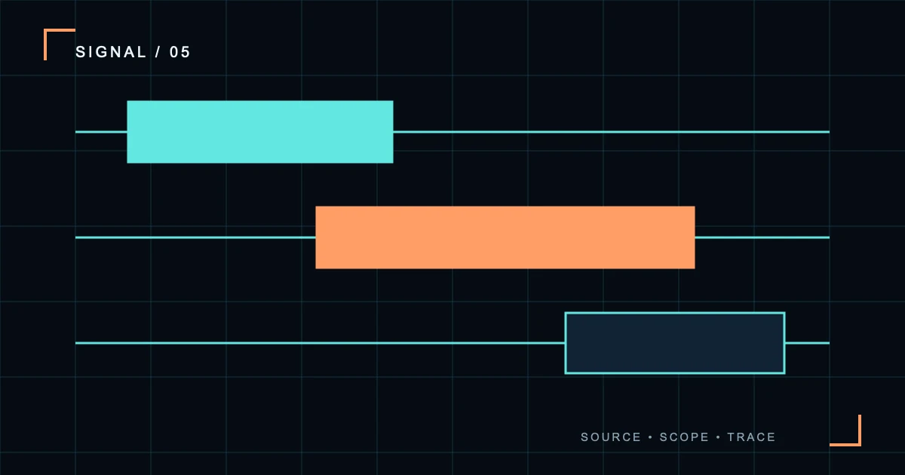

巡航簿 / LOG 05
%%L5_TITLE%%
%%L5_SUMMARY%%
当前简报航线
%%L5_H2_1%%
%%L5_TEXT_1%%
%%L5_MODULE_HEAD_1%%
%%L5_MODULE_TEXT_1%%
%%L5_MODULE_HEAD_2%%
%%L5_MODULE_TEXT_2%%
%%L5_MODULE_HEAD_3%%
%%L5_MODULE_TEXT_3%%
%%L5_H2_2%%
%%L5_TEXT_2%%
| %%L5_TABLE_COL_1%% | %%L5_TABLE_COL_2%% | %%L5_TABLE_COL_3%% |
|---|---|---|
| %%L5_TABLE_ROW_1%% | %%L5_TABLE_CELL_1_1%% | %%L5_TABLE_CELL_1_2%% |
| %%L5_TABLE_ROW_2%% | %%L5_TABLE_CELL_2_1%% | %%L5_TABLE_CELL_2_2%% |
| %%L5_TABLE_ROW_3%% | %%L5_TABLE_CELL_3_1%% | %%L5_TABLE_CELL_3_2%% |
宽表在此区域内横向滚动。
%%L5_H2_3%%
%%L5_TEXT_3%%
%%L5_QUOTE%%
%%L5_QUOTE_SOURCE%%
%%L5_FAQ_TITLE%%
%%L5_FAQ_Q_1%%
%%L5_FAQ_A_1%%
%%L5_FAQ_Q_2%%
%%L5_FAQ_A_2%%
%%L5_FAQ_Q_3%%
%%L5_FAQ_A_3%%
%%L5_FAQ_Q_4%%
%%L5_FAQ_A_4%%
%%L5_SOURCES_TITLE%%
%%L5_SOURCE_NOTE_1%%
%%L5_SOURCE_NOTE_2%%
来源复核：